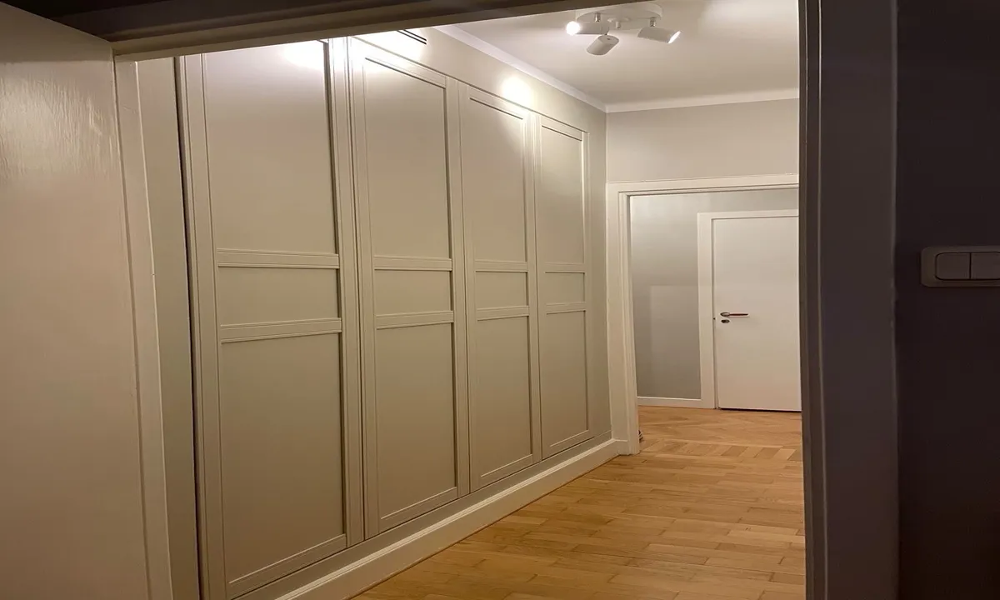

Byggare i Sundbyberg
Från idé på papper till byggt på riktigt.
Vi hjälper dig med byggare i Sundbyberg. Hör av dig så går vi igenom platsen och förutsättningarna för ditt projekt.
Offertförfrågan
Genomtänkt.
Hela vägen.
Våra byggare arbetar med nybyggnation, renovering, ombyggnation och specialanpassningar. Vi hjälper privatpersoner och företag och håller ihop uppdraget med planering, tydliga avstämningar och en dedikerad kontakt.
Vi planerar arbetet tillsammans, håller dig informerad och följer upp resultatet. Materialval, tid, kostnad och garantivillkor går vi igenom för ditt uppdrag.

Frågor om
byggare.
Vilka uppdrag tar ni?
Nya byggnader, renoveringar, ombyggnader och anpassningar efter särskilda behov.
Hur vet jag när det blir klart?
Du får en uppskattad tidsplan. Större och mer komplexa arbeten kräver längre tid.
Vad kostar det?
Vi lämnar en detaljerad offert efter att ha bedömt projektets storlek och förutsättningar.
Hur tänker ni kring miljön?
Vi strävar efter att välja hållbara, återvinningsbara material och energismarta lösningar.
Kan ni ändra planlösningen?
Ja. Vi kan hjälpa till att utveckla rummens funktion och utformning inom fastighetens förutsättningar.